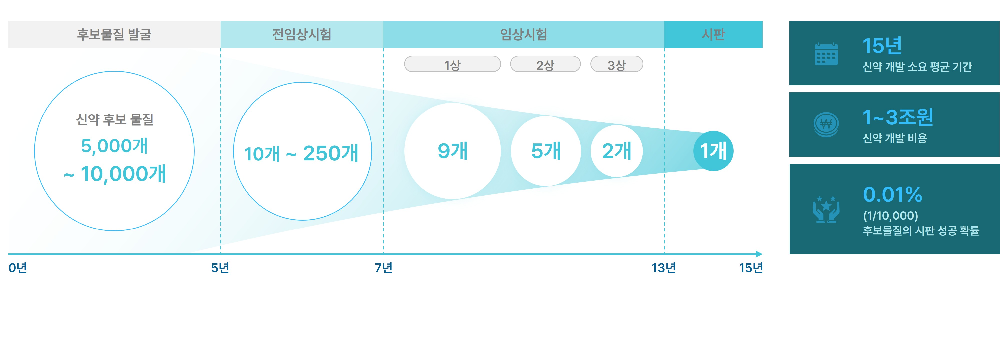
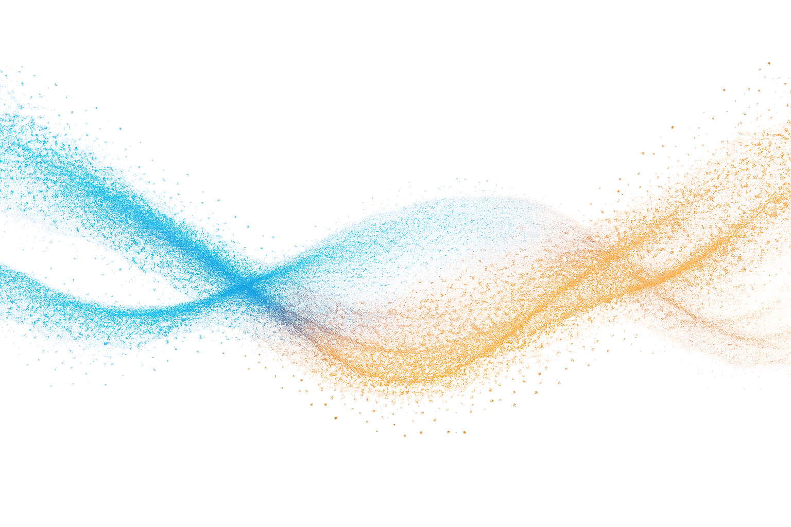
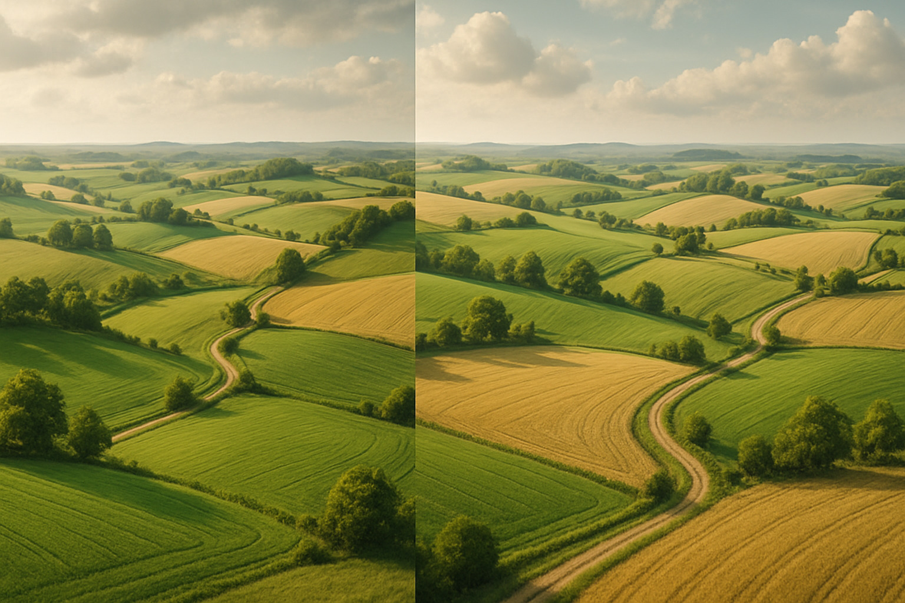
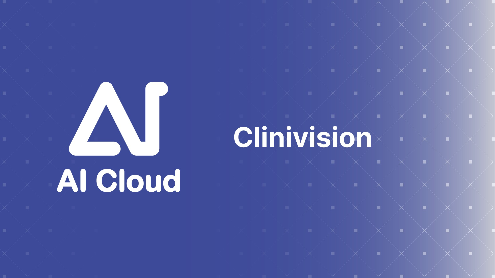

실험 노트와 리포트를 한 곳에서 찾는 위키
검색, 링크 모음, 이미지 자료, 추가 제안을 위한 UI까지 갖춘 연구 위키 템플릿입니다.
Docking
QSAR
Deep Learning
Protocol
Database
검색 결과 / 추천 카드
특집 문서

실험 프로토콜
플라즈마 단백 결합 실험 위키
샘플 준비, 스핀 열처리 조건, 데이터 시각화 링크까지 한 번에 모아둔 문서입니다. 표준화된 순서, 장비 체크리스트, 원본 결과 파일 링크를 포함합니다.
위키 문서로 이동 이미지/미디어 자료



링크 컬렉션
데이터
Public BioAssay Data
ChEMBL, PubChem, BindingDB 등 오픈 데이터베이스 바로가기 링크.
분석
Docking Workflow 템플릿
AutoDock Vina, PLIP 리포트, 상호작용 이미지 HTML 결과 모음.
AI
QSAR 모델 카탈로그
데이터 전처리, 피처 엔지니어링, 스코어 카드 링크를 한 화면에서 관리.
정보 추가 제안
제목, 카테고리, 요약, 참고 링크, 첨부파일 영역을 갖춘 모양새입니다. 실제 저장 로직은 연결되어 있지 않습니다.
최근 업데이트
Protocol
Microsome stability assay | by SY
AI
QSAR baseline vs transformer 비교 리포트
Imaging
Confocal 이미지 주석 추가